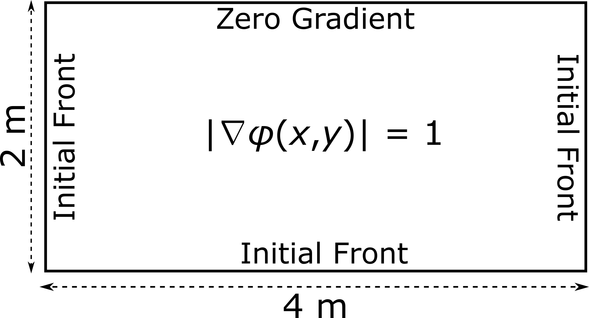

In this tutorial, we address a solidification front propagation problem in a two-dimensional domain. This is a typical interface tracking problem, used to simulate how a solidification front moves through a medium, such as metal cooling or crystal growth.
The propagation of a solidification front can be modeled using the eikonal equation that in its general form is given by: \(|\nabla \phi(x,y)| = \frac{1}{F(x,y)}\). In the above, \(\phi(x,y)\) is the arrival time of the front at point (x,y), and \(F(x,y)\) is the local speed of front propagation. This speed can vary spatially based on factors such as temperature gradients, material properties, or crystallographic orientation. For this example, we simplify the problem by using a constant front propagation speed of 1 m/s throughout the domain, which reduces the equation to: \(|\nabla \phi(x,y)| = 1\). It's worth noting, however, that actual solidification speeds in real materials typically range from micrometers per second to centimeters per second for most metals and alloys. Only specialized rapid solidification processes might achieve speeds approaching or exceeding 1 m/s.
The above schematic illustrates the problem domain and outlines the associated boundary conditions. In this model, we consider a square domain where solidification begins simultaneously from three sides (bottom, left, and right boundaries), which are all maintained at a constant value of zero (representing the initial front position). This configuration simulates a common scenario in casting or directional solidification processes, where a molten material is contained within a mold and begins to solidify from the cooled walls. The top boundary has a zero gradient condition, allowing the front to propagate freely in that direction.
The eikonal equation is nonlinear, making it challenging to solve directly. Due to convergence difficulties, a viscous term elimination technique is employed. According to this approach, a viscous term \(\varepsilon(\nabla^2\phi)\) is added to the equation, resulting in: \(|\nabla \phi(x,y)| + \varepsilon(\nabla^2\phi) = 1\). This viscous term essentially introduces numerical diffusion that ensures the solution remains smooth throughout the domain. The solution of this modified equation converges to the solution of the original eikonal equation as \(\varepsilon \rightarrow 0\).
Below is a demonstration of how to use the FEAScript library to solve this front propagation problem in your web browser. You only need a simple HTML page to run this example where the following code snippets should be included. First, we should load the required external libraries:
<head> <!-- ...head region... --> <script src="https://cdnjs.cloudflare.com/ajax/libs/mathjs/5.0.0/math.min.js"></script> <script src="https://cdnjs.cloudflare.com/ajax/libs/plotly.js/2.27.0/plotly.min.js"></script> <!-- ...continue of head region... --> </head>
We should then define the problem parameters, such as the solver type, the geometry configuration, and the boundary conditions. This is performed using JavaScript objects directly in the HTML file:
<body>
<!-- ...body region... -->
<script type="module">
// Import FEAScript library
import { FEAScriptModel, plotSolution, printVersion } from "https://core.feascript.com/dist/feascript.esm.js";
window.addEventListener("DOMContentLoaded", (event) => {
// Print FEAScript version in the console
printVersion();
// Create and configure model
const model = new FEAScriptModel();
model.setSolverConfig("frontPropagationScript");
model.setMeshConfig({
meshDimension: "2D",
elementOrder: "quadratic",
numElementsX: 12,
numElementsY: 8,
maxX: 4,
maxY: 2,
});
// Apply boundary conditions
model.addBoundaryCondition("0", ["constantValue", 0]); // Βottom
model.addBoundaryCondition("1", ["constantValue", 0]); // Left
model.addBoundaryCondition("2", ["zeroGradient"]); // Top
model.addBoundaryCondition("3", ["constantValue", 0])); // Right
// Solve
model.setSolverMethod("lusolve");
const { solutionVector, nodesCoordinates } = model.solve();
// Plot results
plotSolution(
solutionVector,
nodesCoordinates,
model.solverConfig,
model.meshConfig.meshDimension,
"contour",
"solutionPlot"
);
});
</script>
<!-- ...continue of body region... -->
</body>
After solving the case, the results are demonstrated in a 2D contour plot. To visualize it, include an HTML container where the plot will render:
<body> <!-- ...body region... --> <div id="solutionPlot"></div> <!-- ...continue of body region... --> </body>
The "solutionPlot" is the id of the div where the plot will be rendered. This id is passed as an argument to the "plotSolution" function to specify the target div for the plot.
Below is the 2D contour plot of the computed front propagation. The contour values represent the arrival time of the front at each position, with contour lines showing the position of the front at different times. This plot is generated in real time using FEAScript. Please note that you may need to wait a few moments for the solution to be calculated and plotted since the eikonal equation is solved iteratively with the Newton-Raphson method directly in your browser.